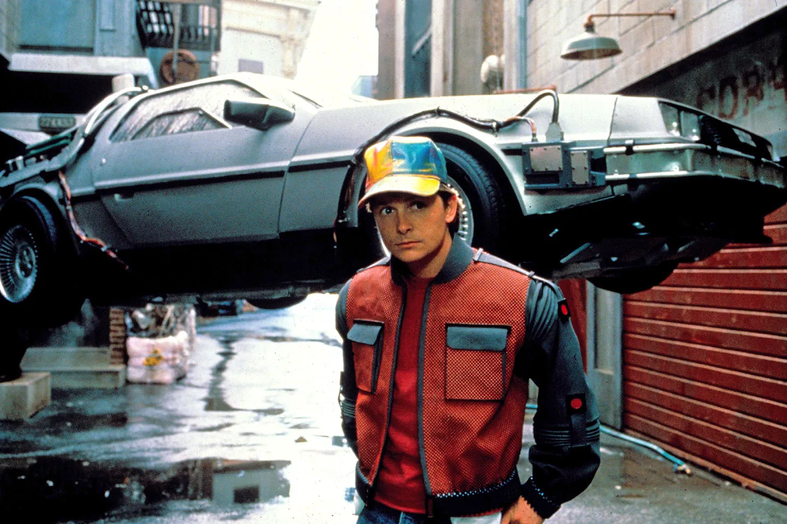

Shower Presentation Engine
Yours Truly, Famous Inc.
Blueprint
Driven
Development
Who am I?

- 10+ років у розробці
- HTML, CSS, JS, TS, Angular, BJJ, React, Next.js
- 4 роки брехав, що пишу по TDD
Як мене знайти?
Про що будемо сьогодні розмовляти?
- Теорія TDD
- Практична задача з реального проєкту
- Поради і рекомендації в еру ШІ
Візьмемо реальну задачу з проєкту
Імпорт даних з Excel / CSV файлу
-
користувач має можливість
завантажити файл з табличкою і переглянути
- як файл буде завантажено, буде змінюватись в майбутньому
-
користувач має можливість
обирати рядок і колонку, де починаються дані для імпорту
Демонстрація задачі
TDD що це взагалі?
*(життєве визначення)
TDD що це взагалі?
Test Driven Development або тести до коду.
БУКВАЛЬНО всі знають що це, всі пробували,
але ніхто не пише üòâ
Чому ніхто не хоче писати по TDD?
Тести - це зайва робота.
Тести постійно падають.
Тести можна написати і потім.
Моє улюблене ➡️ ➡️ ➡️
Тобі гроші на тести ніхто не дасть
Чому ніхто не хоче писати по TDD?
-
Тести - це зайва робота.
-
Тести постійно падають.
-
Тести можна написати і потім.
Тести не –≥–æ–ª–æ–≤–Ω–µ ü§Ø
Правильний TDD: Navigation Map
Navigation Map
-
чіткий план з назвами абстракцій
- описом їх API
- покроковим детальним списком задач.

Navigation Map (Triple A principle)
-
Architecture: Архітектура або
дизайн, того, що ми будуємо
-
API: інтерфейси, типи,
"контракти" сутностей
-
Actions: Чіткий список дій,
іншими словами - що потрібно зробити і в якій послідовності
Так ШІ, Майбутнє вже наступило

Чому TDD важливий у 2k25?
Згідно з репортом від
Dora 95%
полагаються на ШІ асистентів, з них 70% довіряють ШІ.
Тобто ми занадто сильно довіряємо ШІ.

Чому TDD важливий у 2k25?
Правильний TDD дозволяє
-
Сформувати точну специфікацію того, що ми хочемо
зробити.
-
Перевірити, що ми отримали саме те, що хотіли.
-
Впроваджувати зміни маленькими кроками.
Правильний TDD: Navigation Map
Реальна задача з проєкту
Імпорт даних з Excel / CSV файлу
-
користувач має можливість
завантажити файл з табличкою і переглянути
- як файл буде завантажено, буде змінюватись в майбутньому
-
користувач має можливість
обирати рядок і колонку, де починаються дані для імпорту
Navigation Map: Architecture
data-import/
├── DataImport.tsx
├── components/
│ ├── DataImportForm.tsx
│ ├── DataPreviewGrid.tsx
│ └── FileUploader.tsx
Navigation Map: Architecture
data-import/
├── hooks/
│ └── useDataImport.ts
├── services/
│ └── parseImportFile.ts
│ └── formatDataCellForPreview.ts
└── types/
├── DataImportSelection.types.ts
└── DataPreview.types.ts
Navigation Map: API
// types/DataImportSelection.types.ts
export type DataCell = string | number | null;
export type DataRow = Record<string, DataCell>
export type DataSheet = {
name: string;
headers: string[];
rows: DataRow[];
};
export type DataFile = {
fileName: string;
sheets: DataSheet[];
};
Navigation Map: API
// components/DataPreviewGrid.tsx
interface Props {
data: DataFile | null;
selection: DataImportSelection | null;
}
export const DataPreviewGrid: React.FC<Props> = ({
data,
selection,
}) => {
if (!data) return <div>No data loaded</div>;
return <div>{/* Render your table here */}</div>;
};
Navigation Map: Actions
-
Компонент DataPreviewGrid.tsx
-
Форматування даних, функція formatDataCellForPreview
- Інтеграція з компонентом AgGrid або подібним
- Підготовка даних для таблиці
- Налаштування колонок і рядків
- Компонент DataImportForm.tsx
- ...
- тощо
Чому створення Navigation Map дуже важливо?
Бо вона дозволяє:
-
Працювати над однією великою фічею
паралельно кільком розробникам. Наприклад, один
робить DataPreviewGrid, інший -
DataImportForm, тощо.
-
Плануючи сутності заздалегідь ми можемо використати найкращі практики
по типу SOLID, DRY, тощо.
-
Гарний дизайн і архітектура запорука
добрих тестів.
üôè Чи можемо ми нарешті почати писати тести?
Ніт üóø
Для написання тестів теж існують кращі практики і правила
Роботів і людей треба направляти, як це і не дивно.
Як направляти роботів і людей?
-
Всі інструменти контролю якості коду і їх конфіги:
eslint, prettier, тощо.
-
Документація для роботів і людей, наприклад в теці
/docs в MarkDown форматі.
Як для коду, так і для тестів.
-
Приклади правильних тестів в репозиторії.
-
Інші: в залежності від інструментів.
Як направляти роботів і людей?
-
Всі інструменти контролю якості коду і їх конфіги:
eslint, prettier, тощо.
-
Документація для роботів і людей, наприклад в теці
/docs в MarkDown форматі.
Як для коду, так і для тестів.
- Приклади правильних тестів в репозиторії.
- Інші: в залежності від інструментів.
// docs/testing-guidelines.md
# Test Writing Guidelines
0. The Golden Rule: Design for lean testing
// docs/testing-guidelines.md
# Test Writing Guidelines
0. The Golden Rule: Design for lean testing
## Section 1: The Test Anatomy
1.1 Include 3 parts in each test name
(1) What is being tested?
(2) Under what circumstances and scenario?
(3) What is the expected result?
// docs/testing-guidelines.md
# Test Writing Guidelines
0. The Golden Rule: Design for lean testing
## Section 1: The Test Anatomy
1.1 Include 3 parts in each test name
(1) What is being tested?
(2) Under what circumstances and scenario?
(3) What is the expected result?
1.2 Structure tests by the AAA pattern
1.3 Don’t “foo”, use realistic input data
Приклад тесту Ч.1
import { formatDataCellForPreview as sut } from "...";
describe("formatDataCellForPreview", () => {
let dataCell: DataCell | null;
it("should return None for null input", () => {
// Arrange
dataCell = null;
// Act
const formattedValue= sut(dataCell);
// Assert
expect(formattedValue).toBe("None");
});
});
Приклад тесту Ч.2
describe("formatDataCellForPreview", () => {
describe("when input is a number", () => {
it("should add currency formatting to it", () => {
// Arrange
dataCell = 122000.56;
// Act
const formattedValue= sut(dataCell);
// Assert
expect(formattedValue).toBe("$1,220,00.56");
});
});
});
Поширені помилки
-
Писати тести, щоб вони спочатку пройшли, а не впали.
-
Намагатись забезпечити покриття тестами на якийсь відсоток.
-
Занадто складні тести або one test to rule them all.
-
Більше про про помилки у відео
тут
Як почати писати по TDD вже сьогодні?
-
EASY:
Вивчіть основи TDD. Неможливо за 30 хвилин це все
охопити.
-
MEDIUM: Напишіть
Тест на Багу,
але тест має бути написаним до коду, і він має впасти.
-
HARD: Пишіть по
TDD весь новий код üóø.
- Keep Calm ❤️
Підсумки
Переваги правильного TDD:
-
Дизайн нашого коду краще бо в нас є Navigation Map.
-
Ми можемо делегувати задачі і працювати над великою
фічею паралельно.
-
Наш код легше підтримувати і
розширювати в майбутньому.
Ми краще спимо вночі.
- Можна видєлуватись і виступати на конференціях.
Як мене знайти?